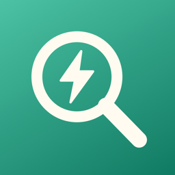

Confidentialité
En bref
LED Scan ne collecte aucune donnée. L'app fonctionne entièrement sur ton appareil : pas de compte, pas de publicité, pas de mesure d'audience, pas de suivi. Elle ne se connecte jamais à internet et rien ne quitte ton iPhone, ton iPad ou ton Mac.
Ce que l'app lit, sur ton appareil seulement
- Photos et vidéos, si tu l'autorises : leur taille, leur date et leur durée, pour les classer. Une suppression passe toujours par la confirmation d'iOS et les éléments restent 30 jours dans « Supprimés récemment ».
- Fichiers : uniquement les dossiers que tu choisis toi-même. LED Scan lit leur taille et leur état dans iCloud. « Alléger » retire la copie locale sans supprimer le fichier, qui reste dans iCloud.
- État de l'appareil : espace libre, niveau de batterie, mode économie d'énergie et chaleur, tels que les fournit iOS.
- Sur le Mac, LED Scan lit l'état du Mac et des appareils que tu y branches (batterie, stockage, sécurité, plantages) avec les outils d'Apple. Les rapports restent dans ton dossier personnel.
Ces informations restent sur ton appareil. Elles ne sont jamais transmises ni partagées avec qui que ce soit.
Tes droits
Comme aucune donnée personnelle n'est collectée, il n'y a rien à consulter, corriger ou effacer chez nous. Tu peux retirer à tout moment l'accès aux photos dans Réglages, Apps, LED Scan. Supprimer l'app efface aussi ses réglages.
Contact
Responsable : Laurent Dana. Pour toute question sur cette politique, écris-nous.
Si cette politique change, la nouvelle version sera publiée sur cette page avec sa date de mise à jour.